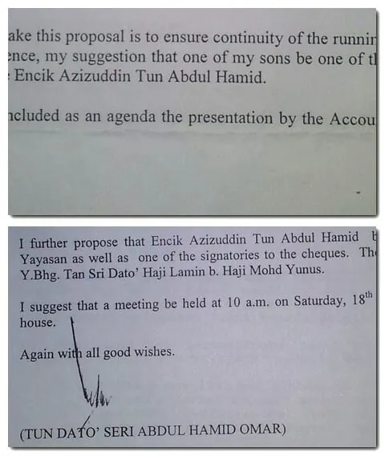

Founded on 9 November 1996.
ABOUT YTAH
Thirty years of service,
carried forward.
Established in 1996, Yayasan Tun Abdul Hamid advances legal education and academic excellence while extending practical assistance to people in need.
01 / ABOUT
OUR PURPOSE
Education, opportunity and responsibility.
Yayasan Tun Abdul Hamid was established on 9 November 1996 as a tax-exempt charitable foundation. Its primary objects are the furtherance of legal education — including financial assistance for students of Law and law-related studies — alongside a humanitarian mission to relieve suffering and improve quality of life.
Scholarships, bursaries, awards, research and educational support.
Practical assistance delivered through direct support and Small Steps.
Three decades of continuing service in 2026.

WHY THE FOUNDATION EXISTS
Built on a belief that service should outlast any one generation.
The foundation carries the name of Tun Dato’ Seri Haji Abdul Hamid bin Haji Omar, whose career in law and public service culminated in his service as Chief Justice of the Federal Court of Malaysia. From its earliest years, the Yayasan linked his professional legacy to practical opportunities for students and communities.
Discover the founder’s legacy ↗HOW WE WORK
Opportunity
Help remove financial barriers that can prevent capable students from progressing.
Excellence
Recognise academic achievement and encourage high standards in legal education.
Dignity
Provide humanitarian support without turning recipients into publicity.
Continuity
Preserve the foundation’s purpose through responsible stewardship across generations.